1 連絡
1.1 課題1
課題1～ ぼくのかんがえたさいきょうのTodoアプリ ～ の提出期限は「11月19日 (木) 18時」です。
- 提出先 : Teams「PG3-課題1」
- 課題1で開発した Todo アプリは、以前に作成した ポートフォリオ (自己紹介と作品集) からも閲覧できるようにリンクを追加 してください。
- ポートフォリオは、単なる作品集ではなく、自分が何を学び、どのようなものを開発してきたかを示す実績の記録 でもあります。他科目で開発したソフトウェアや修得したスキルなども、記憶が鮮明なうちにこまめに追加していきましょう。
- 特に、高専祭展示は、チームでの開発経験を具体的にアピールできる貴重な機会 です。必ずポートフォリオに掲載し、展示内容だけでなく、自分が担当した役割や工夫した点なども記録しておいてください。スクリーンショットや会場写真があると、より説得力のある実績紹介になります。
1.2 小テスト
- 次回の講義で 小テスト5 を実施します。主に、今回の講義内容からの出題となります。
- 第04回講義 で実施した 小テスト3 は、全体的に非常に成績が悪い結果となりました。オブジェクト配列のイミュータブルな操作は、React (Next.js) を使ったアプリ開発における基本的かつ重要な処理です。十分に復習し、確実に理解しておいてください。なお、当該範囲 (第03回講義) から、予告なしに小テストを出題する可能性 があります。
第03回講義で学んだ内容のうち、React (Next.js) を正しく理解し、使いこなすために欠かせないセクション は以下のとおりです。確実に理解しておいてください。
1.3 Node.js のセキュリティアップデート
2026年10月21日に、重大な脆弱性を修正する Node.js のセキュリティアップデート が公開されました。各自、使用中の系列にあわせて、次のバージョン以上にアップデートしてください。
- Node.js 24 系列を使用している場合：24.22.1 以上 であれば OK
- Node.js 22 系列を使用している場合：22.23.4 以上 であれば OK
- Node.js 26 系列を使用している場合：26.12.1 以上 であれば OK
アップデートの手順は、第01回の「インストーラのダウンロードと実行」 と同じです。公式ダウンロードページ から、現在使用している系列の最新版の Windows Installer (.msi) をダウンロードし、実行してください。
インストール後は VSCode とターミナルを開きなおし、次のコマンドでバージョンを確認してください。
node -v先日の PHP の深刻な脆弱性 に続き、今回の Node.js の更新にも、条件によっては 攻撃者が外部から任意のプログラムを実行できる脆弱性 の修正が含まれています。
広く使われている言語や実行環境でも、このような深刻な問題が見つかることがあります。利用しているソフトウェアの脆弱性情報にも日頃から関心を持ち、必要なアップデートを適用するようにしてください。
- 2026年10月21日に修正された Node.js の脆弱性 CVE-2026-111497 について、どのような問題で、どのような悪用が起き得るのか、情報系の高専3年生向けに分かりやすく解説してください。
- 2026年10月21日に修正された Node.js の脆弱性 CVE-2026-105483 について、どのような問題で、どのような悪用が起き得るのか、情報系の高専3年生向けに分かりやすく解説してください。
1.4 セキュリティ技術を支えるプログラミングとシステム開発
近年、企業や組織における情報漏洩やサイバー攻撃が相次いでおり、情報セキュリティを担う人材の重要性や需要は、今後ますます高まっていくと考えられます。
「情報セキュリティ」は、情報通信技術の基礎を理解して初めて深く学ぶことができる分野 です。システムが本来どのように動作するのかを知らなければ、何が異常なのか、どこに弱点があるのか、なぜ攻撃が成立するのかを十分に理解することはできません。
そして、システムの仕組みを理解するための最も有効な方法のひとつが、自分自身でシステムを開発すること です。実際に設計・実装する経験を通じて、システムがどのように動作するのかを理解するとともに、どのような設計や実装が脆弱性につながるのかを考えられるようになります。
本科目におけるウェブアプリ開発も、単にアプリを作れるようになることだけが目的ではありません。自ら設計・実装する経験を通じて、システムの内部構造や動作原理への理解を深めることに大きな意義があります。
- 単にアプリを開発するだけなら AI でできてしまいます。
例えば、城を敵の侵入から守る場合を考えてみてください。城の構造や出入口、通路のつながりを知らなければ、どこが侵入されやすいのか、どのような経路で攻め込まれるのかを判断することは困難です。当然、効果的な防御策を考えることもできません。
「城の構造を理解して初めて、その弱点や侵入経路を把握できる」というのは、言うまでもありません。
情報セキュリティも同じです。正常な仕組みを理解してこそ、そこに潜む弱点や問題、異常な動作を理解できるようになります。
2 バックエンド処理を含めたブログアプリの開発
ここからは、これまでに学んだ React の知識を発展させ、Next.js を使ったバックエンド処理を含むブログアプリの開発 に取り組みます。まずは、「Next.js」というフレームワークの特徴を理解し、これから開発するブログアプリの全体像について把握していきます。
2.1 React から Next.js へ
ここまでの授業では、フロントエンドのみで完結する Todo アプリの開発 を通じて、React を使ったモダンウェブアプリ開発の基礎 を学んできました。
ここからの授業では、React をベースとしたフレームワーク である Next.js を使用し、バックエンド (サーバサイド) の処理も含めた、より本格的なモダンウェブアプリ開発 について体験的に学んでいきます。
現代のウェブアプリでは、処理を次の2つに分担させる設計が広く採用されています。
- ユーザーとの対話や画面表示を担当する フロントエンド (ウェブブラウザ上で動作)
- データの管理や業務処理などを担当する バックエンド (サーバ上で動作)
両者は、HTTP/HTTPS を利用した Web API (RESTful API など) を介して通信することで、互いの内部実装に依存しない疎結合な構成 にできます。
この設計では、フロントエンドとバックエンドを独立して開発でき、それぞれに異なるプログラミング言語やフレームワークを採用すること も可能です。
一方、フロントエンドとバックエンドを別々のプロジェクトとして開発・管理する場合、環境構築やプログラム間の連携、データの受け渡しなどに追加の手間が生じる こともあります。
そこで、フロントエンドとバックエンドの両方を、ひとつのフレームワークで効率的に開発するアプローチ も広く利用されています。その代表例が「Next.js」となります。Next.js では、React による画面の構築からサーバ上でのデータ取得・更新などの処理まで、ひとつのプロジェクト内で、TypeScript を使って実装することができます。
- ウェブアプリ開発における「フロントエンド」と「バックエンド」とは、それぞれ何を指しますか。両者はどのような基準で切り分けられ、担当する役割や処理にはどのような違いがあるのですか。具体例を交えて説明してください。
- ソフトウェア設計における「互いの内部実装に依存しない疎結合な構成」とは、どのような状態を指しますか。「密結合な構成」との違いや、疎結合に設計することで得られるメリットについて、具体例を交えて説明してください。
- ウェブアプリ開発において、フロントエンドとバックエンドを Web API を介して疎結合に構成する方式には、どのようなメリットとデメリットがありますか。また、Next.js のようなフルスタックフレームワークを使用して、両者をひとつのプロジェクト内で開発する方式には、どのようなメリットとデメリットがありますか。それぞれの特徴を比較するとともに、両者は対立する設計・開発手法なのか、それとも両立できるものなのかについても説明してください。
フロントエンドの開発で使用される技術 は、実質的に HTML/CSS と JavaScript (TypeScript) が中心となっており、React や Vue.js、Svelte など、コンポーネントを基本単位として UI を構築するライブラリやフレームワークが広く利用されています。かつて広く使用されていた jQuery は、こうしたモダンな開発技術の普及にともない、新規開発での採用が減少傾向 にあります。
- 「コンポーネント指向フレームワーク」ってなんですか。React や Vue.js、Svelte などはコンポーネント指向フレームワークだと聞いたのですが…
- いま、私は React を勉強しています。そのなかで、React などの普及にともない jQuery は新規開発では使用されなくなってきている、と聞きました。jQuery って何ですか。React と組み合わせて使用することはできないのですか。
一方、バックエンド では、次のように多様な「プログラミング言語」と「フレームワーク」の組み合わせが選択でき、実際の開発現場でも幅広く活用されています。
- Ruby (Ruby on Rails)
- PHP (Laravel)
- Java (Spring Boot)
- Python (Django、FastAPI、Flask)
- C# (ASP.NET Core)
- Rust (Actix Web)
- Go (Gin、Echo)
- JavaScript/TypeScript (Express、Fastify など、Node.js を利用)
このように、フロントエンドとバックエンドでは、使用される技術やフレームワークに大きな違いがあります。
こうしたなか、Next.js は、TypeScript (JavaScript) を使用して、フロントエンドとバックエンドの両方を、ひとつのプロジェクト内で統合的に開発できるフルスタックフレームワーク として広く利用されています。
Next.js は、UI の構築に React を採用しているため、これまでの Todo アプリ開発で学んだ React の知識やスキルを、そのまま多くの場面で活かすこと ができます。さらに、ルーティングやサーバサイドの処理など、React 単体では提供されない機能も備えており、より本格的なウェブアプリ開発に対応できます。
2.1.1 定着確認
選択肢のある問題は最も適切なものを1つ選び、それ以外は説明が「適切」か「不適切」かを答えよ。
- ウェブアプリにおける「バックエンド」の説明として、最も適切なものはどれか。
- A. ウェブページの下部や、画面に表示されていない部分のこと。
- B. サーバ上で動作し、データの管理や業務処理などを担当する部分のこと。
- C. ウェブブラウザ上で動作し、画面の見た目を整える部分のこと。
- D. アプリ開発が終わったあとに行う、保守作業のこと。
- 答え: B。「画面の裏側」という見た目の区分ではなく、処理の役割や実行場所で考えてください。
- 次のうち、バックエンドに担当させる処理として最も適切なものはどれか。
- A. ボタンにマウスを重ねたときに、ボタンの色を変える。
- B. 入力中の記事の文字数を、ブラウザ上で表示する。
- C. 記事を投稿する権限をサーバ上で確認し、データベースに保存する。
- D. 画面幅に合わせて、記事一覧の表示を2列から1列に切り替える。
- 答え: C。サーバ上での権限確認やデータの保存は、バックエンドの代表的な役割です。
- React 単体が主に担当する役割として、最も適切なものはどれか。
- A. コンポーネントを組み合わせて、フロントエンドの UI を構築する。
- B. サーバ上のデータベースの作成・管理を行う。
- C. フロントエンドとバックエンドの通信プロトコルを定める。
- D. UI の構築に加え、サーバ側の認証・データ保存など、バックエンド開発の機能一式を提供する。
- 答え: A。React は UI を構築するためのライブラリであり、React 単体でバックエンド開発の機能一式を提供するわけではありません。
- Next.js の特徴として、最も適切なものはどれか。
- A. React を使わず、独自の仕組みで UI を構築する。
- B. フロントエンド専用で、サーバ上の処理は実装できない。
- C. バックエンド専用で、画面は必ず別のプロジェクトで開発する。
- D. React による UI
の構築と、サーバ上でのデータ取得・更新などを、ひとつのプロジェクト内で開発できる。
- 答え: D。Next.js は、フロントエンドとバックエンドの両方を扱えるフルスタックフレームワークです。
- 「Next.js では、フロントエンドとバックエンドの両方を TypeScript
で開発できる。」という説明は「適切」か「不適切」か答えよ。
- 答え: 適切。バックエンドを開発するために、別のプログラミング言語を使う必要はありません。
- 「Next.js ではフロントエンドもバックエンドも TypeScript
で記述可能で、すべての処理はウェブブラウザ上で実行される。」という説明は「適切」か「不適切」か答えよ。
- 答え: 不適切
- 「フロントエンドを React、バックエンドを Python で開発し、HTTP/HTTPS を利用した Web API
を介して連携させることができる。」という説明は「適切」か「不適切」か答えよ。
- 答え: 適切。Web API を介してデータをやり取りすることで、異なる言語で開発したプログラム同士でも連携できる。
- フロントエンドとバックエンドが「疎結合」である状態として、最も適切なものはどれか。
- A. 同じプログラミング言語を使い、互いの内部変数を直接読み書きしている。
- B. API の仕様に従って連携し、互いが内部でどのように処理しているかに依存しない。
- C. 両者の間で、データのやり取りを一切行わない。
- D. 必ず異なるプログラミング言語を使っている。
- 答え: B。疎結合は、連携しないことや、異なる言語を使うことを意味するものではありません。
- 「Next.js に移行すると React
を使わなくなるので、これまで学んだコンポーネントの知識は使えなくなる。」という説明は「適切」か「不適切」か答えよ。
- 答え: 不適切。Next.js は UI の構築に React を採用しているため、React の知識を引き続き活かすことができます。
- 「Next.js でフロントエンドとバックエンドをひとつのプロジェクトにまとめる方式と、Web API
を介して疎結合に構成する方式は、両立できない。」という説明は「適切」か「不適切」か答えよ。
- 答え: 不適切。ひとつのプロジェクト内でも Web API を設け、画面側とサーバ側を疎結合に構成できる。プロジェクトの分け方と、内部実装への依存の程度は別の観点となる。
2.2 ブログアプリ開発の全体像
今回の授業からは、Next.js を使用して「ブログアプリ」を開発していきます。
これまでの Todo アプリ開発と同様に、チュートリアル形式で少しずつ機能を追加しながら、Next.js によるウェブアプリ開発の基本を学んでいきます。
最終的には Supabase という BaaS (Backend as a Service) を活用し、ブログ記事の CRUD操作 (＝ Create / Read / Update / Delete )、ログイン機能 (ユーザ認証機能) までを実装していきます。チュートリアルとしてのブログアプリの完成後は、最終課題 として「オリジナルのウェブアプリの開発」に取り組んでもらいます。
大まかな流れは、次のようになっています。
- Next.js 開発環境の構築 ← 今回の授業
- ブログアプリの「フロントエンド開発」のチュートリアル
← 今回と次回の授業
- microCMS の利用
- ブログアプリの「バックエンド開発」のチュートリアル
- ブログアプリのカスタマイズとつくり込み
- オリジナルのウェブアプリ


- 授業で、Next.js を使ったブログアプリの開発において、microCMS というサービスを利用するそうです。microCMS とはどのようなサービスですか。また、ブログアプリの開発において、どのような役割を担うと考えられますか。具体的な利用方法を推測して説明してください。
- 授業で、Next.js を使ったブログアプリの開発において、Supabase というサービスも利用するそうです。Supabase とはどのようなサービスですか。また、ブログアプリの開発において、どのような役割を担うと考えられますか。具体的な利用方法を推測して説明してください。
- 授業で、Next.js を使ったブログアプリの開発において、Vercel というサービスも利用するそうです。Vercel とはどのようなサービスですか。また、ブログアプリの開発において、どのような役割を担うと考えられますか。具体的な利用方法を推測して説明してください。
2.2.1 定着確認
- Next.js
がフレームワークとしてカバーする範囲は「フロントエンド」、「バックエンド」、「フロントエンドとバックエンドの両方」のどれか。
- 答え: フロントエンドとバックエンドの両方
- TypeScript (JavaScript) 以外で、バックエンド開発に使用される (代表的な)
プログラミング言語とフレームワークの組み合わせを2組答えよ。
- 答え (例): Ruby と Ruby on Rails、Python と Django。
- DBと連携するウェブアプリ開発の文脈で「CRUD操作」の各文字は何の略語か答えよ。
- 答え: Create/Read/Update/Delete
- RESTful APIにおいて採用される代表的な通信プロトコルを挙げよ。
- 答え: HTTP/HTTPS
- jQuery は、フロントエンド用のライブラリか、バックエンド用のライブラリか答えよ。
- 答え: フロントエンド用のライブラリ
3 Next.js の 開発環境構築
まずは、Next.js を使ったアプリ開発を始めるための環境を構築していきます。
3.1 スキャフォールディング
第04回講義 でも紹介したように、開発に必要なファイルやフォルダ、設定ファイル、サンプルコードなどをまとめて自動生成し、プロジェクトの骨組みを用意することを「スキャフォールディング」といいます。
本授業では Next.js のバージョン 16 を使用して、Cache Components は無効にして開発を進めます。
以下、プロジェクト名称を next-blog-app として、Next.js 16.4.3 の開発環境を構築していきます。
ターミナル (PowerShell) を起動し、プロジェクトフォルダを作成したい位置 (例えば C:\Users\xxxx\Documents など。ただし、OneDrive同期が適用されていないフォルダ) に移動してください。Next.js の開発環境は、次のコマンドを使って構築していきます。
npx create-next-app@16.4.3ここで npm ではなく npx
とする点に注意してください
(違いが気になる人は生成AIで解決してください)。今回は、使用するバージョンをそろえるため、@16.4.3
を指定しています。
- Node.js における
npmとnpxの違いを初心者向けに分かりやすく解説してください。
はじめて npx create-next-app
を実行するときや、時間を空けて実行するときは、以下のように訊かれるので y
で回答してください。
PS C:\Users\xxxx\Documents> npx create-next-app@16.4.3
Need to install the following packages:
create-next-app@16.4.3
Ok to proceed? (y)create-next-app
では、開発環境に関していくつかの質問がされます。ここでは、以下のように回答 (設定)
してください。ここで誤った設定をしてしまうと、あとからの修正が大変になるため、慎重に設定してください。
√ What is your project named? … next-blog-app
√ Would you like to use the recommended Next.js defaults? » No, customize settings
√ Would you like to use TypeScript? … No / Yes
√ Which linter would you like to use? » ESLint
√ Would you like to use React Compiler? … No / Yes
√ Would you like to use Tailwind CSS? … No / Yes
√ Would you like your code inside asrc/directory? … No / Yes
√ Would you like to use App Router? (recommended) … No / Yes
√ Would you like to use Cache Components? … No / Yes
√ Would you like to customize the import alias (@/*by default)? » No / Yes ※
√ What import alias would you like configured? … @/*
√ Would you like to include AGENTS.md to guide coding agents to write up-to-date Next.js code? … No / Yes
√ Would you like to help improve Next.js by letting agents prepare anonymized feedback for your review as you code? (Disable anytime withexperimental.agentFeedback: false.) … No / Yes
※「What import alias would you like
configured?」では、そのまま Enter を押下すれば、上記のように
@/*
が設定されます。全ての質問に答えると各種パッケージのダウンロードとインストールを含めた環境構築が開始されます
(しばらく時間がかかります)。
最終的に以下のように Success! Created next-blog-app
というログが表示されれば成功です。
Success! Created next-blog-app at C:\Users\xxxx\Documents\next-blog-app設定を間違えてしまったときは、エクスプローラから当該フォルダ (
next-blog-app ) を完全削除してから、再度
npx create-next-app@16.4.3 を実行してください。
3.1.1 定着確認
- Next.js 16.4.3 を使った開発環境 (の雛形) を構築するためのコマンドを答えよ。
- 答え: npx create-next-app@16.4.3
- 本授業で採用する Next.js のメジャーバージョンを答えよ。
- 答え: 16
3.2 VSCodeの起動
作成されたプロジェクトフォルダ (next-blog-app) に移動して VSCode を起動してください。
cd next-blog-app
code .[Ctrl]+[J] で VSCode のターミナルを開き、第04回と同じ TypeScript 6.0 系列と
Tailwind CSS のバージョンにそろえてください。
npm i -D --save-prefix="~" typescript@~6.0.3npm i -D @types/nodenpm i -D --save-exact tailwindcss@4.3.3 @tailwindcss/turbopack@4.3.3以上が完了した段階で、プロジェクトフォルダは、以下のような構成になっているはずです。
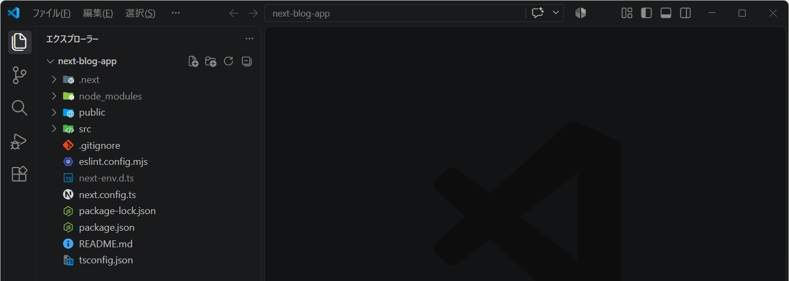
プロジェクトフォルダに作成されたファイルについて簡単に確認しておきます。詳細について、生成 AI などを利用して掘り下げてください。
3.3 .gitignore
Gitによるバージョン管理をしないファイルやフォルダ (＝GitHubにプッシュしないファイルやフォルダ) を設定するファイルです。ライブラリをインストールする /node_modules フォルダなどが除外設定として記入されています。
このプロジェクトでは、.env という環境変数の設定ファイル (= あとで「microCMSのAPIキー」や「SupabaseのDB接続文字列」を記述する予定のファイル) もバージョン管理から除外したいので、次の記載があることを確認しておいてください。
.env*により .env や .env.local などのファイルがGit管理から除外されます。
3.4 eslint.config.mjs
eslint.config.mjs は、ESLint ( 第04回講義で解説済み ) のための設定ファイルとなります。
3.5 next-env.d.ts
TypeScript が Next.js の「組み込み機能」や「型」を認識するためのグローバル型宣言ファイルです。ファイルに書かれているように This file should not be edited (＝このファイルは編集してはいけません)。
3.6 next.config.ts
next.config.ts では 外部ドメインからの画像読み込みの制御 に関する設定などを記述します。必要に応じて設定を追加したり、書き換えたりする必要があります。
ここで、以下のように next.config.ts の 第04行目 に
cacheComponents: false, を記入し、Cache Components が
無効 になるように設定してください。
import type { NextConfig } from "next";
const nextConfig: NextConfig = {
cacheComponents: false,
turbopack: {
rules: {
"*.css": {
loaders: ["@tailwindcss/turbopack"],
as: "*.css",
},
},
},
};
export default nextConfig;- 環境構築時に Cache Components を「No」にしているため既に無効ですが、本授業の方針を明示するために記述しておきます。
Cache Components は、キャッシュや画面の描画処理を最適化するための機能ですが、使いこなすには追加の知識が必要です。本授業では、この機能をいったん無効にし、まずは Next.js を使ったアプリ開発の基礎固めに集中します。
- 私は React の初学者です。Next.js 16 で開発するにあたり、先生から「まずは Cache Components は無効化して、Next.js を用いた開発についての基礎固めをしたほうがいい」とアドバイスを受けました。単にバックエンドの処理結果をキャッシュして高速化するだけの話ではないのですか？なにか難しい要素があるのですか？
3.7 package-lock.json と package.json
これらのファイルについては、既に 解説済み
です。"dependencies" の項目を確認すると、内部で React
19 を使用していることが確認できます。
package.json の "scripts" には、以下のように
dev、build、start、lint の 4
つのコマンドが定義されています。それぞれのコマンドの役割について確認していきます。
3.7.1 💻 npm run dev
「ホットリロード」や「エラー表示」の機能を提供する 開発サーバ でアプリを起動します。デフォルトでは3000番ポートで起動します。実行すると .next/dev にビルドファイルが出力されます。
- このフォルダは .gitignore のなかでバージョン管理の対象外に設定されています。
VSCodeのターミナル (Ctrl+Jで起動)
から実際に以下のコマンドを実行してみてください。
npm run dev起動したサーバは http://localhost:3000/ でアクセス可能です。
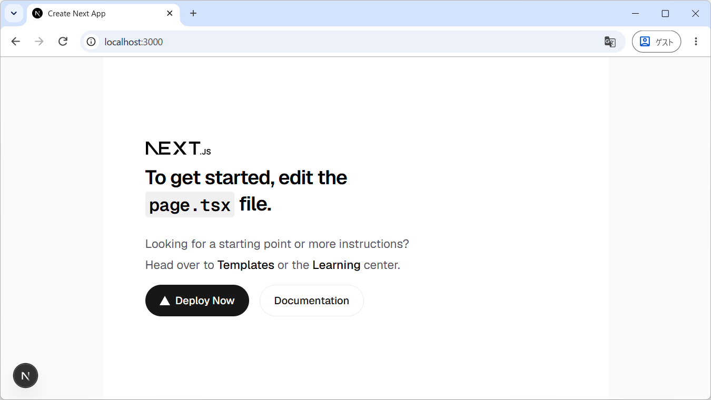
上記のようなトップページが表示されることを確認してください。画面上の「To get started, edit the page.tsx file.」は「まずは page.tsx を編集することから始めましょう」という意味です。
開発モードでの起動が確認できたら、VSCode のターミナルから Ctrl+C
を入力して停止しておいてください。
アプリの挙動がおかしいときは…
レアケースですが、npm run dev で立ち上げたアプリの挙動がおかしいときは
.next
フォルダを一旦削除することで解決することがあります。今後の開発で行き詰まったときには試してみてください。
3.7.2 💻 npm run build
開発中に使用する npm run dev とは異なり、npm run build
は、アプリを 本番環境 (プロダクション環境) で動作させるためにビルド
するコマンドです。
ビルドでは、コードの「最適化」「バンドル」「ミニファイ化」などが行われ、その結果が .next フォルダに出力されます。なお、このコマンドでは、「ビルド」するだけでサーバは起動しません。
実際に以下のコマンドを実行してみてください。
npm run build本番環境にアプリをデプロイする際には、こうしたビルド処理が必要となります。ビルド処理の詳細 (最適化、バンドル、ミニファイ化の概要) については、生成AIを活用して概要を把握してください。
- Node.js + TypeScript 環境でのウェブアプリ開発において、ビルド時に行われる「最適化」「バンドル」「ミニファイ化」とは、それぞれどのような処理ですか。
3.7.3 💻 npm run start
ビルドされた 本番環境 (プロダクション環境) 向けのアプリを起動
します。開発用サーバと同様に、デフォルトではポート番号 3000
で起動します。なお、run を省略して npm start
としても実行できます。
実際に以下のコマンドを実行してみてください。
npm run startアプリが起動したことを確認できたら、ターミナルで Ctrl + C
を押してサーバを停止してください。
3.7.4 💻 npm run lint
ESLint を使って ソースコードの静的解析 (コード品質チェック) を実行します。プログラムを実行することなく、コードの記述方法や潜在的な問題をチェックできます。
実際に以下のコマンドを実行してみてください (環境によっては数分かかることもあります)。
npm run lint- エラーや警告が表示されなければ、設定されたルールの範囲では問題が検出されなかったことになります。
第03回講義 のなかで紹介した VSCode の ESLint 拡張機能を利用すれば、コマンドを実行しなくても、コードの編集中に「警告」や「エラー」を確認できます。
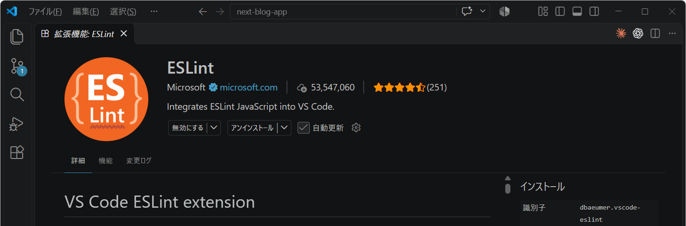
ただし、Next.js 16 では npm run build を実行しても Lint
は自動実行されません。
ビルドが成功してもコード品質に問題がないとは限らないため、npm run lint
でもチェックするようにしてください。
以降の解説は、ESLint の拡張機能がインストールされ、有効化されていることを前提とします。
3.7.5 定着確認
- 標準設定で Next.js 16 をセットアップした場合、内部的に利用される React
のメジャーバージョンを答えよ。
- 答え : 19
- ウェブアプリケーションを開発する際、実際のユーザーにサービスを提供するための本番環境を何というか。答え
: ②
- ① ランタイム環境 (Runtime Environment)
- ② プロダクション環境 (Production Environment)
- ③ ステージング環境 (Staging Environment)
- ④ コンテナ環境 (Container Environment)
3.8 Tailwind CSS の設定
現在のプロジェクトでは、next.config.ts の turbopack.rules
に設定された @tailwindcss/turbopack によって、Tailwind CSS
のスタイルが処理されます。
また、src/app/globals.css では、Tailwind CSS の読み込みに加えて、アプリ全体に適用するスタイルを定義できます。
3.9 README.md
就職活動やインターンシップに向けてウェブアプリをポートフォリオとして公開する場合、README.md は 作品の概要や技術的な特徴、開発で工夫した点などを採用担当者に伝える重要な資料 となります。そのため、単なる操作説明ではなく、読み手を意識して内容を整理することが大切です。
- 就職活動やインターンシップで技術力をアピールするために、開発したウェブアプリを GitHub で公開する予定です。採用担当者が README.md を読むことを想定して、どのような構成や内容にすると効果的でしょうか。各項目の目的も含めて解説してください。
- ポートフォリオの README.md において、採用担当者からの評価を下げる可能性がある記述や構成には、どのようなものがありますか。具体的な悪い例と、その改善方法を示してください。
3.10 tsconfig.json
TypeScript のコンパイラや型チェックの動作を制御する設定ファイル です。
Next.js では、TypeScript を利用するための基本的な設定が自動的に用意されます。通常は変更する必要はありませんが、型チェックの厳格さやファイルの参照方法などを調整したい場合に編集します。
3.11 src/app フォルダ
Next.js では、基本的に src/app フォルダ内にファイルやフォルダを配置することで、アプリのコンテンツを構成していきます。この際、ファイルの「名前」や「配置場所（階層構造）」に応じて、その役割や機能が決まる点 に特徴があります。このような設計思想は、設定より規約 (Convention over Configuration：CoC) と呼ばれるアプローチに基づいています。
Next.js における 「設定より規約」 の代表的な例が URLルーティング
です。ルーティングとは、URLのパス（例えば /posts/1 や
/about ）に応じて、「どのコンテンツを表示するか」を決定する仕組み を指します。
3.11.1 Next.js のルーティング
Next.js の App Router では、基本的に src/app 内のフォルダ階層に対応して URL のパスが決まります。それぞれの URL で表示する画面は page.tsx、複数のページで共有するレイアウトは layout.tsx に定義します。
例えば、次のようにプロジェクトフォルダを構成すると…
📂 src/app/
├─ page.tsx # / のコンテンツを定義
├─ layout.tsx # 全てのページで共有されるレイアウトを定義
└─ 📂 foo/
└─ page.tsx # /foo のコンテンツを定義次のようなルーティングルールが自動的に適用されます。
- http://xxxx:3000/ をリクエストしたときは、src/app/layout.tsx にラップされた src/app/page.tsx のコンテンツが表示されます。
- http://xxxx:3000/foo をリクエストしたときは、src/app/layout.tsx にラップされた src/app/foo/page.tsx のコンテンツが表示されます。
また、layout.tsx は 入れ子構造 で適用され、親から子に順番にレイアウトが重ねられていきます。例えば、次のようにプロジェクトフォルダを構成して http://xxxx:3000/bar/baz をリクエストすると、、、
📂 src/app/
├─ page.tsx
├─ layout.tsx # 全てのページで共有されるレイアウトを定義
└─ 📂 bar/
├─ page.tsx
├─ layout.tsx # /bar 階層下のページで共有されるレイアウトを定義
└─ 📂 baz/
└─ page.tsx # /bar/baz のコンテンツを定義次のように複数の layout.tsx が順番に適用されます。
- src/app/layout.tsx のなかに、
- src/app/bar/layout.tsx が配置され、
- そのなかに src/app/bar/baz/page.tsx のコンテンツが表示されます。
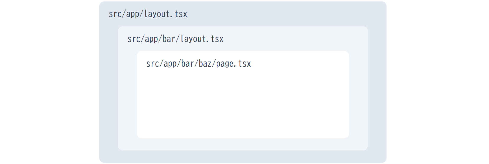
以上のように複数の layout.tsx が上位から順にネストされ、最終的に page.tsx のコンテンツが描画されます。
Flask のURLルーティング
前期の 知能情報実験実習1 で実装したように Python の Flask
では、@app.route() デコレータを使って
URLパスごとにコンテンツを生成してレスポンスする関数 (処理) を割りあてました。/bar と /bar/baz
は別々の関数 (@app.route('/bar') と @app.route('/bar/baz'))
で処理され、親子関係のような構造は自動的には構築されませんでした。つまり、URL構造と、プロジェクトフォルダの構造は必ずしも対応していませんでした。
App Router と Pages Router
Next.js のバージョン「12」以前では「Pages Router」というルーティングシステムが採用されていました。現在の Next.js 16 では、2022年10月のバージョン13.0で導入され、2023年5月の13.4で安定版となった「App Router」という 新しいルーティングシステムの利用が推奨 されています。
ただし、ウェブ上の記事や生成AIの回答では、まだ Pages Router を前提とした情報が多く見られます。ウェブ検索や生成AIを利用する場合は、この点に留意してください。特に、生成AIでは 「Next.js 16 + TypeScript + App Router を使用し、Cache Components は無効にしています。」 のような文をプロンプトに含めるようにしてください。
3.11.2 定着確認
- ソフトウェア開発において、プロジェクトの基本的なフォルダ構成や設定ファイルなどを自動生成し、開発のひな形を用意することを何というか。
- 答え: スキャフォールディング
- アプリケーションの振る舞いを細かく設定ファイルで指定するのではなく、フレームワークが想定する命名規則や配置ルールに従うことで、設定コードを書く手間を省くプログラミングパラダイムのことを何というか。「XXX
よりYYY」もしくは「XXX over YYY」の形式で答えよ。
- 答え: 設定より規約。Convention over Configuration。
- Next.js 16
で使用可能な2つのルーティングシステムを答えよ。また、現在、使用が推奨されているルーティングシステムはどちらか。
- 答え: 「Pages Router」と「App Router」。現在推奨されているのは「App Router」
- Next.js で TypeScript および App Router
を採用したプロジェクトにおいて、
/aboutというURLパスにアクセスしたときに表示される画面 (UI) を作成したい。このために src/app/about フォルダに作成すべきファイル名を拡張子を含めて答えよ (大文字と小文字を明確に区別すること)。- 答え:
page.tsx
- 答え:
- 「App Router では、src/app/about
フォルダを作成すれば、page.tsx を作成しなくても
/aboutの画面が自動的に用意される。」という説明は「適切」か「不適切」か答えよ。- 答え: 不適切。フォルダを作成するだけでは画面は用意されず、その URL に対応する UI を定義する page.tsx が必要となる。
- 上記の bar と baz
のフォルダ構成で「
/bar/bazにアクセスすると、src/app/bar/page.tsx と src/app/bar/baz/page.tsx の両方のコンテンツが表示される。」という説明は適切か、不適切か。- 答え: 不適切。表示されるページは src/app/bar/baz/page.tsx。親階層から順に適用されるのは layout.tsx であり、親階層の page.tsx が重ねて表示されるわけではない。
4 最小構成の Next.js アプリ
まずは、最低限必要なファイルだけで、最もシンプルにアプリを構成していきます。プロジェクトフォルダの src/app に対して、以下の作業を行なってください。
4.1 globals.css の編集
globals.css を次のように編集してください (先頭の1行を残して以降の内容を全て削除)。ファイルの編集後は忘れずに保存操作をしてください。以降の編集でも同様です。
4.2 page.tsx の編集
page.tsx を次のように書き換えてください。
"use client";
const Page: React.FC = () => {
return (
<main>
<div className="font-bold text-2xl">Main</div>
</main>
);
};
export default Page;つづいて npm run dev
を実行して結果を確認してください。以下のような表示になると思います。
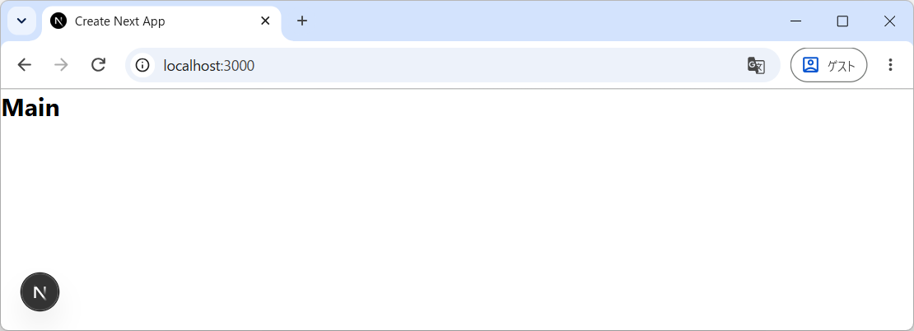
Next.js において、第01行目 の "use client";
は重要な意味を持ちます。この講義では、インタラクティヴなウェブアプリを作成するため、原則として全てのTSXファイル（
ただし src/app/layout.tsx
を除く）の先頭には、この宣言を入れてください。これにより、その関数コンポーネントで
Reactの状態管理（ useState や useEffect などの
ReactHooks）が使用できるようになります。
第03行目 の Page は、アロー関数形式で記述した
Reactの関数コンポーネント です。JSX (JavaScript XML)
が戻り値になっていることを確認してください。なお、型 React.FC の FCは Function Component (関数コンポーネント) の略になります。
関数コンポーネントの名前は自由に設定できますが、先頭を大文字にしてパスカルケースで命名する必要があります。例えば
page のように先頭を小文字にすると予期せぬトラブルの原因となります。
また、page.tsx
に記述する関数コンポーネントには、第11行目のように必ず
export default キーワードを付けてデフォルトエクスポートに設定してください。
なお、型推論が働くので、第03行目の React.FC
は省略も可能であり、さらに function形式 にすれば export default
を定義部に直接的に記述可能なので、次のように書くこともできます。ただし、どちらの形式で書かれていても読解できるようになっておいてください。
"use client";
export default function Page() {
return (
<main>
<div className="font-bold text-2xl">Main</div>
</main>
);
}次項で説明しますが、同じ階層 (フォルダ内) に layout.tsx と
page.tsx が存在するときは、layout.tsx のなかの
{children} に page.tsx が埋め込まれてレンダリングされます。
4.2.1 定着確認
「リスト1」は、Next.js のプロジェクトに配置したファイルである。以下の問いに答えよ。
- 「リスト1」に示すプログラムにおいて、関数
Pageのなかで useState や useEffect などの ReactHooks を使用したい。このとき、第01行目 に記述すべき文を答えよ。- 答え:
"use client";
- 答え:
- 「リスト1」に示すプログラムにおいて、関数
Pageをデフォルトエクスポートしたい。このとき、第09行目 に記述すべき文を答えよ。- 答え:
export default Page;
- 答え:
const Page: React.FC = () => {
return (
<main>
<div className="font-bold text-2xl">Main</div>
</main>
);
};
4.3 layout.tsx の編集
Next.js において src/app/layout.tsx は アプリのレイアウトに関するエントリーポイント (アプリ全体の DOM ツリーを構成する基点となるファイル) という位置づけになります。そして、このファイルには、アプリ全体のHTML構造を定義した関数コンポーネントを記述します。
この layout.tsx には、先ほどの page.tsx と同様に任意の名前の 関数コンポーネント を記述できますが、次の条件を満たす必要があります。
export defaultを付与してデフォルトエクスポートに設定すること (第27行目)。- Props として
childrenプロパティが受け取れること (第09行目 から 第14行目)。 "use client";を記述しないこと。- ただし src/app 直下以外に配置する layout.tsx には
"use client";を記述してください。
- ただし src/app 直下以外に配置する layout.tsx には
以上を満たすように layout.tsx を次のように書き換えてください。
import type { Metadata } from "next";
import "./globals.css";
export const metadata: Metadata = {
title: "NextBlogApp",
description: "Built to learn Next.js and modern web development.",
};
type Props = {
children: React.ReactNode;
};
const RootLayout: React.FC<Props> = (props) => {
const { children } = props;
return (
<html lang="ja">
<body>
<header>
<div className="bg-slate-800 text-white font-bold py-2">Header</div>
</header>
<div>{children}</div>
</body>
</html>
);
};
export default RootLayout;Props として受け取る children には URL
のパスに対応するページなどの表示内容 が渡されます。例えば、http://xxxx/foo
をリクエストしたときには、src/app/foo/page.tsx で定義したページの表示内容が
{children} の位置に埋め込まれます。下位のフォルダにも layout.tsx
がある場合は、そのレイアウトも適用されます。
第04行目 から 第07行目
で設定した内容は、最終的にレンダリングされるHTMLの <head>...</head>
に反映されます。
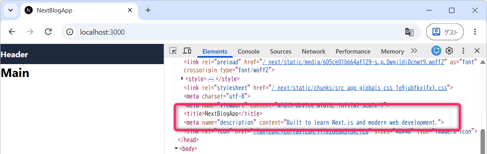
4.4 動作確認
src/app は、次のようなファイル構成となるはずです。
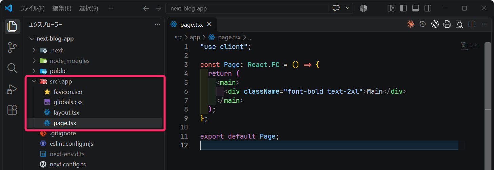
npm run dev で開発モードでアプリを起動して http://localhost:3000/
にアクセスしてください。次のような画面が表示されるはずです。
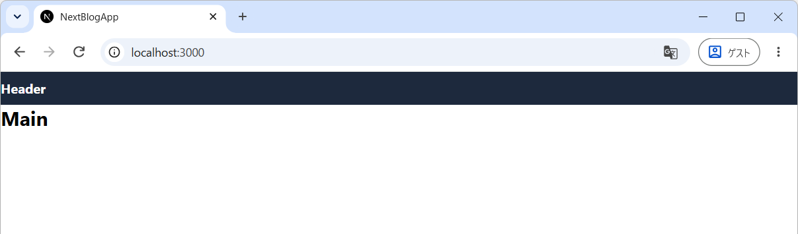
4.5 ESLint と Prettier の設定
ここでは、ESLint によるコードチェック と、Prettier を使った Tailwind CSS のユーティリティクラスの自動並べ替え を設定します。基本的には React開発環境で設定した内容 と同じです。
VSCodeの拡張機能としての Prettier (識別子:esbenp.prettier-vscode) とESLint
(識別子:dbaeumer.vscode-eslint)
はあらかじめインストールされているものとします。
VSCode でターミナルを起動し、次のように「prettier」と「prettier-plugin-tailwindcss」を開発用のパッケージとしてインストールします。
npm i -D --save-exact prettier@3.9.10 prettier-plugin-tailwindcss@0.8.1つづいて eslint.config.mjs を次のように変更し (第08行目 から 第13行目 の内容を追記し)、未使用変数の警告を無効にしてください。作成途中の変数も残せるようにするための設定です。
import { defineConfig, globalIgnores } from "eslint/config";
import nextVitals from "eslint-config-next/core-web-vitals";
import nextTs from "eslint-config-next/typescript";
const eslintConfig = defineConfig([
...nextVitals,
...nextTs,
{
rules: {
"no-unused-vars": "off",
"@typescript-eslint/no-unused-vars": "off",
},
},
// Override default ignores of eslint-config-next.
globalIgnores([
// Default ignores of eslint-config-next:
".next/**",
"out/**",
"build/**",
"next-env.d.ts",
]),
]);
export default eslintConfig;さらに、プロジェクトフォルダの「直下」に .vscode フォルダを作成して、そのなかに settings.json を作成して次の内容を記述してください。
{
"editor.formatOnSave": true,
"editor.formatOnPaste": true,
"editor.formatOnType": true,
"editor.defaultFormatter": "esbenp.prettier-vscode",
"editor.codeActionsOnSave": {
"source.fixAll.eslint": "explicit"
},
"css.lint.unknownAtRules": "ignore"
}設定ファイル名は setting.json ではなく settings.json なので注意してください。
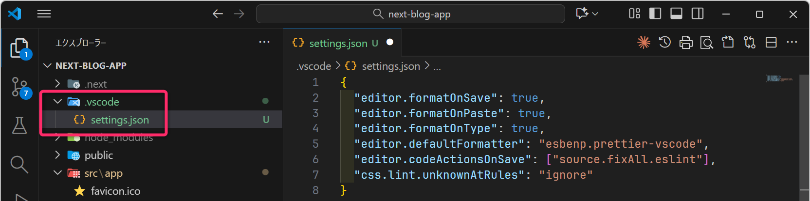
さらに、ルートフォルダの直下に .prettierrc を新規作成して、以下の内容を貼り付けて保存してください。
{
"semi": true,
"plugins": ["prettier-plugin-tailwindcss"],
"tailwindStylesheet": "./src/app/globals.css",
"tailwindFunctions": ["cn"]
}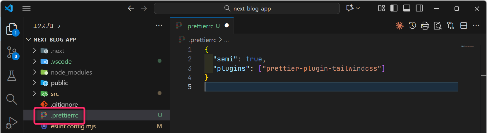
以上で設定は完了します。src/app/page.tsx
を開き、その状態で保存操作をすると Tailwind 関連のCSSクラス (ユーティリティクラス)
の自動並び替え (font-bold text-2xl 👉 text-2xl font-bold)
が実行されます。
src/app/layout.tsx についても、ファイルを開いて再保存すると並べ替えが実行されます。
5 ヘッダのコンポーネント化
Next.jsでは 再利用性 や 保守性 を高めるために、コードの「コンポーネント化」が推奨されています。コンポーネント化とは UIやロジックの共通部分を再利用可能な小さなパーツとして切り出すこと を意味します。
ここでは例として、src/app/layout.tsx の 第18行目 から 第20行目 に記述している ヘッダ部 を、「Header」というコンポーネントに切り出して別ファイルで管理する手順を説明します。
const RootLayout: React.FC<Props> = (props) => {
const { children } = props;
return (
<html lang="ja">
<body>
<header> {/* ここから */}
<div className="bg-slate-800 py-2 font-bold text-white">Header</div>
</header> {/* ここまでをHeaderコンポーネント化する */}
<div>{children}</div>
</body>
</html>
);
};まずは src/app に _components というフォルダを作成して、そこに Header.tsx を新規作成してください。
ここでは、フォルダ名の先頭に アンダースコア _
をつけて、_components
としてください。先頭にアンダースコアをつけると、そのフォルダと配下のフォルダがルーティングの対象外となり、部品をまとめる場所として使えます。
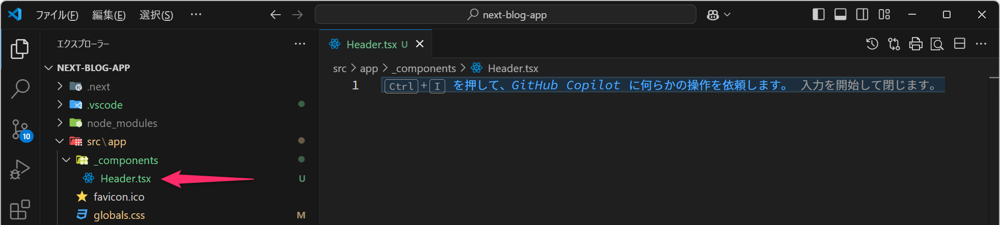
つづいて Header.tsx に以下のように Header
という関数コンポーネントを記述して保存してください。なお、慣例的に Reactの関数コンポーネントを記述するファイル名は、先頭を大文字にしたパスカルケース
(例えば Header.tsx や Button.tsx など)
で名前を付けます。ただし、Next.js の特別なファイルである page.tsx と
layout.tsx は例外的に先頭を小文字にします。
"use client";
const Header: React.FC = () => {
return (
<header>
<div className="bg-slate-800 py-2 font-bold text-white">Header</div>
</header>
);
};
export default Header;次に src/app/layout.tsx を次のように書き換えてください。第03行目 と 第19行目 が書き換えられた部分になります。
import type { Metadata } from "next";
import "./globals.css";
import Header from "@/app/_components/Header";
export const metadata: Metadata = {
title: "NextBlogApp",
description: "Built to learn Next.js and modern web development.",
};
type Props = {
children: React.ReactNode;
};
const RootLayout: React.FC<Props> = (props) => {
const { children } = props;
return (
<html lang="ja">
<body>
<Header />
<div>{children}</div>
</body>
</html>
);
};
export default RootLayout;第03行目 では src/app/_components/Header.tsx
で定義している Header コンポーネントをインポートしています。パスの先頭を @
にすると src を起点とした 絶対パス
でファイル位置の指定が可能になります。これは、Next.js
の環境構築で以下のように設定しているためです。
√ Would you like to customize the default import alias (@/*)? … No / Yes
√ What import alias would you like configured? … @/*
なお、import Header from "./_components/Header"
のように相対パスでも指定が可能です。プロジェクトフォルダが複雑になってくるほど、絶対パスで指定できることのメリットが大きくなります。
以上のようにインポートしたHeaderコンポーネントを、第19行目 において
<Header /> のような自己完結タグで配置しています。これは
<Header></Header> のように記述することもできます。
開発モードでブログアプリを実行して
(npm run devを実行して)、ヘッダ部をコンポーネント化する前と同様にアプリが表示されることを確認してください。
5.1 FontAwesome の利用
Next.js で FontAwesome の各種アイコンを使用する場合は少し注意が必要になってきます。
まずは、同様にパッケージをインストールしてください。
npm i --save-exact @fortawesome/react-fontawesome@3.5.0 @fortawesome/fontawesome-svg-core@7.3.1npm i --save-exact @fortawesome/free-solid-svg-icons@7.3.1また、src/app/layout.tsx を以下のように編集します (第04行目から第06行目の内容を記述してください)。この部分が Next.js 固有の注意点になります。
import type { Metadata } from "next";
import "./globals.css";
import "@fortawesome/fontawesome-svg-core/styles.css";
import { config } from "@fortawesome/fontawesome-svg-core";
config.autoAddCss = false;
import Header from "@/app/_components/Header";
export const metadata: Metadata = { ...
// 以下、略つづいて、実際にアイコンを使いたいコンポーネントでの処理になります。ここでは、Headerコンポーネントにサカナのアイコン() を追加していきたいと思います。
src/app/_components/Header.tsx を次のように書き換えてください。第02行目 から 第03行目 と 第09行目 が編集部分になります。
"use client";
import { FontAwesomeIcon } from "@fortawesome/react-fontawesome";
import { faFish } from "@fortawesome/free-solid-svg-icons";
const Header: React.FC = () => {
return (
<header>
<div className="bg-slate-800 py-2 font-bold text-white">
<FontAwesomeIcon icon={faFish} className="mr-1" />
Header
</div>
</header>
);
};
export default Header;各ファイルが保存されていることを確認して、アプリを実行して表示を確認してください。次のようにヘッダになアイコンがついているはずです。
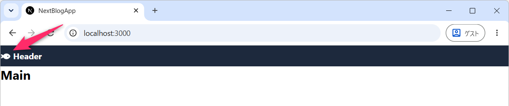
なお、layout.tsx に追加した3行をコメントアウトすると (リロードしたときに) 表示が乱れることも確認してください。確認後は、コメントアウトを解除して元に戻してください。
5.1.1 演習
- Header.tsx の 第09行目 の
faFishを、faSkullに変更してください。その他、FontAwesome の任意のフリーアイコン (CLASSIC) に変更してみてください。- 使用するアイコンは
import文にも追加してください。
- 使用するアイコンは
5.2 インジケータの表示/非表示の切り替え
現在、開発サーバで起動すると画面左下に、デバッグ支援のインジケータが表示されるようになっています。クリックすると、そこから各種情報が確認できます。
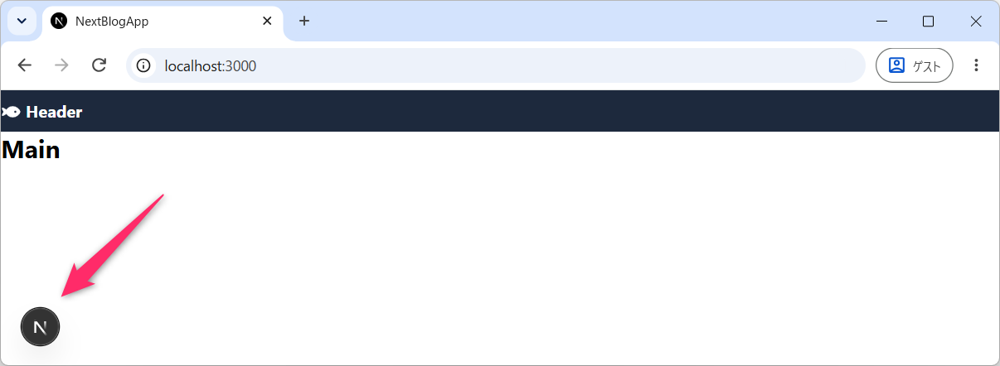
このインジケータを開発サーバでも「非表示」にしたいときは、next.config.ts を以下のように設定してください (第05行目に設定を追加しています)。
import type { NextConfig } from "next";
const nextConfig: NextConfig = {
cacheComponents: false,
devIndicators: false,
turbopack: {
rules: {
"*.css": {
loaders: ["@tailwindcss/turbopack"],
as: "*.css",
},
},
},
};
export default nextConfig;5.3 レイアウトの調整
現状では、左端に余白がなくレスポンシブデザインにもなっていないので、ここでレイアウトの大まかな調整をしていきます。次の図のようなレイアウトになるように設定していきます。
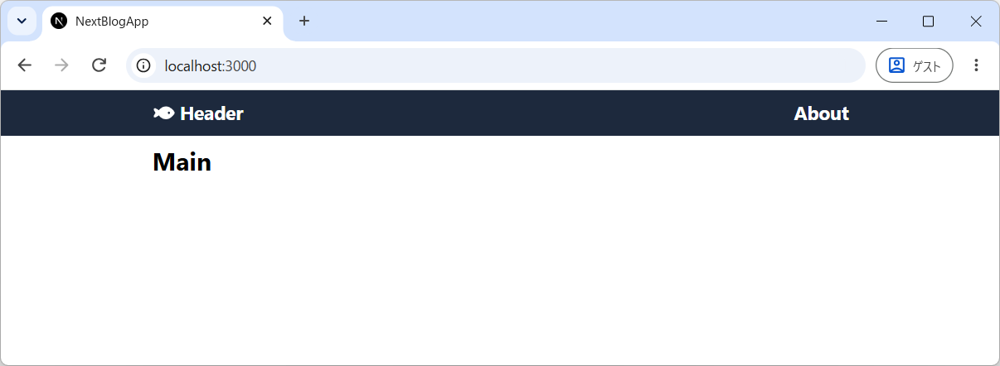
まずは、Tailwind CSS のクラスの結合と競合の解決に使う「cn」をインストールしてください。
npm i --save-exact cn@0.5.0次に src/app/_components/Header.tsx を次のように編集してください。第19行目 の「Header」の文字列は「XXX’s Tech Notes」や「XXXのブログ」のように適当に書き換えてください。
"use client";
import { cn } from "cn";
import { FontAwesomeIcon } from "@fortawesome/react-fontawesome";
import { faFish } from "@fortawesome/free-solid-svg-icons";
const Header: React.FC = () => {
return (
<header>
<div className="bg-slate-800 py-2">
<div
className={cn(
"mx-4 max-w-2xl md:mx-auto",
"flex items-center justify-between",
"text-lg font-bold text-white"
)}
>
<div>
<FontAwesomeIcon icon={faFish} className="mr-1" />
Header
</div>
<div>About</div>
</div>
</div>
</header>
);
};
export default Header;上記は、主に 第09行目 から 第16行目
に編集を加えています。ここでは解説と可読性・保守性の都合で cn
を使ってクラスを3分割して記述していますが、実際には cn を使わずに
className="..." として全てのクラスを列挙可能です。
まず、第12行目 は、max-w-2xl によって div要素の最大幅 を 2xl (=672px)
に設定しています。また、mx-4 によって X方向 (左右) のマージン を
16px に設定しています。また、md:mx-auto によって画面幅が md (=768px)
以上のときに左右のマージンを自動に設定して、要素を水平方向に中央揃えにするようにしています。
第13行目 は「 Header」と「About」を 左右の両端揃え かつ 上下中央揃え にするための設定になります。
第14行目 は「 Header」と「About」の フォントスタイルに関する設定 になります。
Tailwind CSS のクラスの詳細については、生成AIを利用して学んでください。
- Tailwind CSS を使用している環境で、div要素に “flex items-center justify-between” というクラスが設定されていました。これらのクラスはどのようなレイアウト設定か解説してください。
次に src/app/layout.tsx を次のように編集してください。
const RootLayout: React.FC<Props> = (props) => {
const { children } = props;
return (
<html lang="ja">
<body>
<Header />
<div className="mx-4 mt-2 max-w-2xl md:mx-auto">{children}</div>
</body>
</html>
);
};開発モードでブログアプリを実行して、次のようなレイアウトになっていることを確認してください。
また、Chrome のウィンドウ幅を変えたり、デベロッパーツールから、モバイル表示に切り替えてレイアウトのレスポンシブ対応を確認してください。
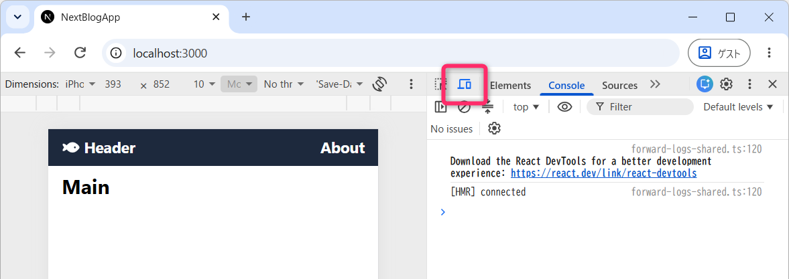
5.3.1 演習 ( 10分)
Header.tsx を次のように変更すると、どのようにレンダリングされるか確認してください。
(変更前)
(変更後)
<div>
<FontAwesomeIcon icon={faFish} className="mr-1" />
Header
</div>
<div>検索</div> {/* 追加 */}
<div>About</div>さらに、次のようなレイアウトのヘッダとするためには、どのようにすればよいか考えて実装してみてください。
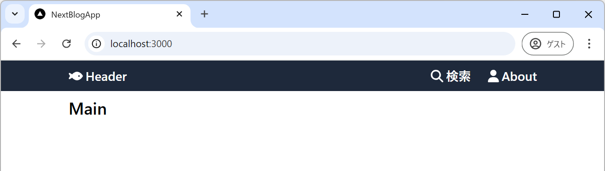
変更後は、一旦、元の状態に戻しておいてください。以降の解説は、元の状態を前提としたものになります。
6 ページの追加
ここでは、アプリに以下のような「About (自己紹介)」のページを追加し、サイト内外へのハイパーリンク を作成する方法、画像を表示 する方法などについて学びます。
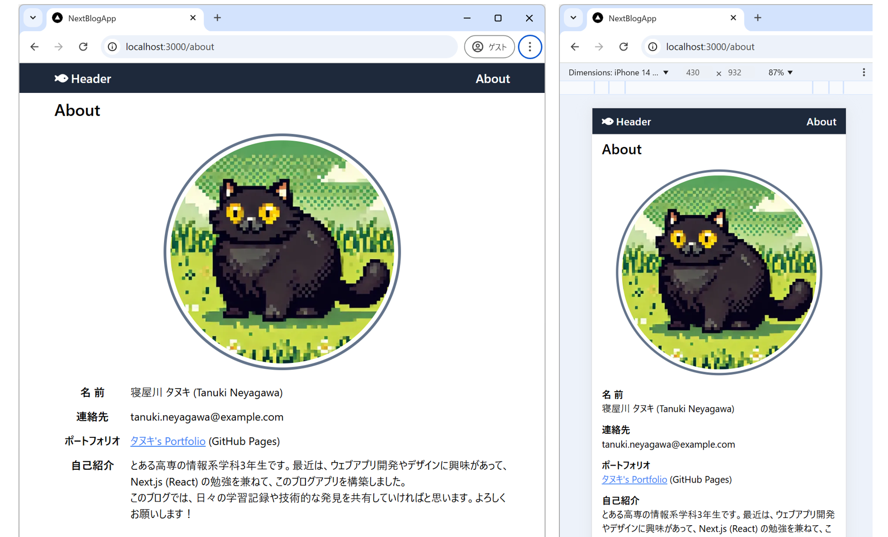
6.1 アバター画像の準備と配置
プロジェクトフォルダの 直下 に public という名前のフォルダが存在することを確認してください。
Next.js において、プロジェクトフォルダの直下に作成した public という名前のフォルダは特別な意味を持ち、静的アセット (= 画像、PDF、Zipファイル、ファビコン、静的なHTML/CSS、robots.txt など ) を配置するために使用します。
例えば、public に test.png という画像を配置しておけば
http://localhost:3000/test.png
のようにリクエストすることで直接的に画像が取得できるようになります。
ここでは、public のなかに images というサブフォルダを作成して「About」のページで表示するアバター画像 avatar.png を配置してください。画像は アスペクト比が「1:1」 のものを用意してください。あるいは こちらの画像 を利用してください。

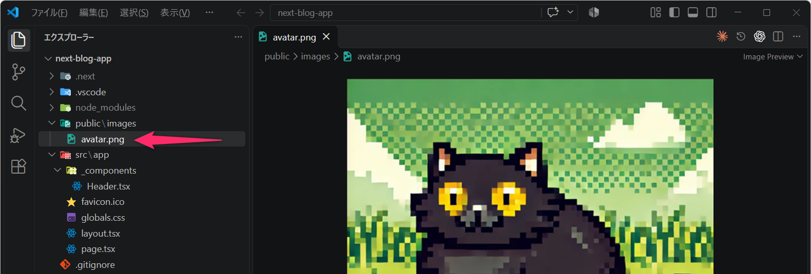
- public フォルダにある file.svg、globe.svg、next.svg、vercel.svg、window.svg などの画像ファイルは、スキャフォールディングにより生成されたものです。今後、使用する予定はないので削除して問題ありません。
次のキーワードに基づき、1990 年代の 16bit JRPG をイメージした、レトロなドット絵 (ピクセルアート) で、正方形のアバター画像を作成してください。
【キャラクタ】 - （キーワードを列挙） 【背景】 - （キーワードを列挙） 【雰囲気】 - （キーワードを列挙） 【描画スタイル・品質指定】 - **512×512ピクセルの正方形画像** とする。 - **64×64〜128×128ピクセル程度の低解像度で描いた絵を、最近傍補間（Nearest Neighbor）で拡大したような、粗く明瞭なドット絵** にする。 - 1つひとつのピクセルが視認できるようにし、曲線や斜線は階段状の輪郭で表現する。 - 使用する色数を抑え、限られたカラーパレットで表現する。 - 陰影は滑らかなグラデーションではなく、色の異なるピクセルの塊で表現する。 - キャラクタの輪郭は暗い色で明確に縁取り、背景と区別する。 - キャラクタを画面中央に大きく配置し、背景は比較的シンプルにする。 - **アンチエイリアス、滑らかな輪郭、ぼかし、写真風の質感、3Dレンダリングは使用しない。**
6.1.1 定着確認
- Next.js
において静的アセットを配置するためのフォルダは、どのような名前で、プロジェクトフォルダのどの位置に作成すべきか答えよ。
- 答え: プロジェクトフォルダの直下に
publicという名前で配置
- 答え: プロジェクトフォルダの直下に
6.2 Aboutコンポーネントの作成
/about というURL (パス) でアクセス可能なコンテンツを作成するために、src/app フォルダのなかに about というサブフォルダを作成して page.tsx というファイルを新規作成してください。
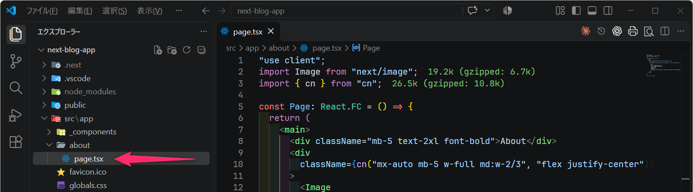
src/app/about/page.tsx を次のような内容で保存してください。そして、開発モードでアプリを起動して http://localhost:3000/about の URL で「About」のコンテンツにアクセスできることを確認してください。
"use client";
import Image from "next/image";
import { cn } from "cn";
const Page: React.FC = () => {
return (
<main>
<div className="mb-5 text-2xl font-bold">About</div>
<div
className={cn(
"mx-auto mb-5 w-full md:w-2/3",
"flex justify-center"
)}
>
<Image
src="/images/avatar.png"
alt="ブログ運営者のアバター"
width={350}
height={350}
preload
className="h-auto max-w-full rounded-full border-4 border-slate-500 p-1.5"
/>
</div>
</main>
);
};
export default Page;まず、上記の 第08行目 では「About」という文字列を出力しています。
また 第15行目 から 第22行目 にかけて
Image
というコンポーネントを使って「アバター画像」を出力しています (Imageコンポーネントは「第02行目」でインポートしています)。ここでは
Image の src 属性に
"/images/avatar.png"というパスを与えていることに注目してください。このパスは、プロジェクトフォルダの
public/images/avatar.png に対応しています。
Image 要素 をラップしている div 要素 では、レスポンシブデザインになるように CSS
を設定 しています。実際にブラウザの画面幅を変化させ アバター画像が適切に拡大縮小・レイアウトされること
を確認してください。CSSクラスの詳細 (特に w-full md:w-2/3 や
flex justify-center など) については、生成 AI
を利用して解決してください。このあたりを理解しておくと、標準的なレイアウトはそこそこ組むことができます。
なお、このファイルでは 第05行目 のように Page
という名前で関数コンポーネントを作成していますが、AboutPage や About
のような任意の名前にすることもできます。ただし、パスカルケースとするように注意してください。
6.2.1 定着確認
- Next.js で画像を表示するための標準コンポーネント名を答えよ。
- 答え : Image
- Next.js でリンクを作成するための標準コンポーネント名を答えよ。
- 答え : Link
- public/images/avatar.png に配置した画像を表示する際、Image
コンポーネントの
srcに指定する値として適切なものを1つ選べ。- ①
"/public/images/avatar.png" - ②
"/images/avatar.png" - ③
"/src/app/images/avatar.png" - ④
"/about/images/avatar.png" - 答え : ②。public フォルダ内のファイルは、public を含めない URL のパスで参照する。
- ①
- 「Image コンポーネントに
width={350}とheight={350}を指定すると、画面幅や CSS の指定に関係なく、必ず 350×350 ピクセルで表示される。」という説明は適切か、不適切か。- 答え : 不適切。実際の表示サイズは CSS や親要素の幅にも左右される。
- 「画像に指定した
h-auto max-w-fullは、画像の幅が親要素を超えないようにし、縦横比を保ったまま縮小できるようにするための指定である。」という説明は適切か、不適切か。- 答え : 適切。max-w-full は最大幅を親要素の幅に制限し、h-auto は高さを縦横比に応じて自動調整する。
6.2.2 演習 (10分)
Image コンポーネントの width と height
の属性を次のように変更した場合、レスポンシブ対応を含めてレンダリング出力がどのように変化するか確認してください。確認の際には、デベロッパーツールのコンソールも同時に確認してください
(エラー出力の有無など)。
width={1000} height={1000}width={100} height={100}width={350} height={200}width={350} height={0}width={350}(heightを設定しない)- width も height も設定しない
確認後は width={350} と height={350} に戻してください。
6.3 ヘッダにAboutへのリンクを設定
ヘッダ右端に配置した「About」の文字列に /about に対する
ハイパーリンク
を設定していきます。つまり、ヘッダの「About」をクリックしたときに /about
に画面遷移するように設定していきます。
src/app/_components/Header.tsx
を開いて、まずは、関数コンポーネントの定義前に import Link from "next/link"; を追加し、その
Linkコンポーネント を使って JSX を以下のように編集してください。
<div>
<Link href="/">
<FontAwesomeIcon icon={faFish} className="mr-1" />
Header
</Link>
</div>
<div>
<Link href="/about">About</Link>
</div>上記では「About」という文字列に /about
のハイパーリンクを設定すると共に、「 Header」に /
へのハイパーリンクも設定しています。通常のHTMLでは <a href="...">...</a>
を使ってハイパーリンクを設定しますが、Next.js
では、遷移先がアプリ内となるハイパーリンクには next/link
からインポートする Linkコンポーネント を使用します。
両者の違いについては、生成AIを利用して解決してください。
- Next.jsにおいて、「“next/link” からインポートしたLinkコンポーネントを使ってハイパーリンクを作成した場合」と「通常のaタグを使ってハイパーリンクを作成した場合」の違いについて教えてください。また、どのように使い分ければよいですか。
開発モードでアプリを起動し、意図したようにハイパーリンクが機能することを確認してください。
6.4 Next.jsにおける画像の表示
Next.js では、通常のHTMLの <img> タグではなく、next/image
からインポートした Imageという組み込みのコンポーネント
を使って画像を表示することが「推奨」されています。
<Image
src="/images/avatar.png"
alt="ブログ運営者のアバター"
width={350}
height={350}
preload
className="h-auto max-w-full rounded-full border-4 border-slate-500 p-1.5"
/>Next.js における「画像の取り扱い」は、大きく「ローカル画像」と「リモート画像」の2種類に分類されます。
ここでの「ローカル画像」とは、プロジェクトフォルダ内に配置した画像のことで、これはさらに 「public フォルダに配置した静的画像」と「src フォルダに配置してインポートする画像」に分けることができます。
public フォルダの画像を、今回のように
src="/images/avatar.png" として表示するときは、width と
height を指定します (親要素の領域を使う fill
という別の指定方法もあります)。
一方で、src フォルダに配置した画像を 静的にインポート
して Image コンポーネントに渡す場合は、Next.js
が元画像の幅と高さを取得できるため、width と height
を省略できます。
どちらの場合も、Image
コンポーネントの標準機能により、画像のサイズ調整やフォーマット変換が自動的に行われます。これらの最適化処理は画像のリクエスト時に実行され、その結果はキャッシュされます。
public フォルダに配置した画像へのアクセス
public
フォルダに配置した「画像」などのコンテンツは、URLを使ってダイレクトにアクセスができます。例えば、public/images/avatar.png
に配置した画像は http://localhost:3000/images/avatar.png
で取得することができます。
一方で、src フォルダに配置した画像は、ソースファイルのパスをそのまま URL として指定しても取得できません。
また「リモート画像」とは「クラウドストレージ」や「外部のウェブサービス」など、アプリの実行時にプロジェクト外から取得する画像 を指します。リモート画像を使用する場合は、画像を提供しているサービスの「ドメイン」を next.config.ts に登録しておく必要があります。
以下は、ダミー画像生成サービス placehold.jp や、avataaars generator で動的生成した画像を参照するための設定 ( 第14行目～第22行目 ) を追加した例です。
import type { NextConfig } from "next";
const nextConfig: NextConfig = {
cacheComponents: false,
devIndicators: false,
turbopack: {
rules: {
"*.css": {
loaders: ["@tailwindcss/turbopack"],
as: "*.css",
},
},
},
images: {
remotePatterns: [
{ protocol: "https", hostname: "placehold.jp" },
{
protocol: "https",
hostname: "avataaars.io",
},
],
},
};
export default nextConfig;Imageコンポーネントに関連して詳しいことが知りたい学生は 公式ドキュメント を確認するか、生成AIを利用して解決してください。
- Next.js において、
next/imageからインポートした「Imageコンポーネント」を使用する際の注意点について教えてください。特に初心者がよくハマるポイントなどを教えてください。 - Next.js において、
<img>タグではなく、next/imageからインポートした「Imageコンポーネント」を使って画像を表示するメリットを教えてください。 - Next.js の Image コンポーネントで、「静的インポートから画像の幅・高さを取得する処理」と「表示に適したサイズや形式に画像を変換する最適化」は、それぞれいつ、何のために行われるのですか。public フォルダの画像を URL で指定する場合と、src フォルダの画像を静的にインポートする場合を比較して説明してください。
6.4.1 演習 (宿題: 30分)
Aboutページについて、「コンテンツ」と「デザイン」を各自で自由に設計して実装してください。
- 実装例 (レスポンシブデザイン対応)
6.4.2 定着確認
- Next.js において
<a>タグの代わりに使用される組み込みコンポーネントをインポートするための文を答えよ。このコンポーネントは、プリフェッチやクライアントサイドルーティングなどの最適化機能を提供する。- 答え:
import Link from "next/link";
- 答え:
- Next.js において
<img>タグの代わりに使用される組み込みコンポーネントをインポートするための文を答えよ。このコンポーネントは、自動画像最適化、遅延読み込み、サイズ最適化などの機能を提供する。- 答え:
import Image from "next/image";
- 答え:
- 現在の URL のパスが
/posts/1のとき、アプリ内の/aboutに移動するリンクとして、適切な記述を1つ選べ。ただし、Link コンポーネントはインポート済みとする。- ①
<Link href="about">About</Link> - ②
<Link href="/about">About</Link> - ③
<Link href="/about/page">About</Link> - ④
<Link href="/src/app/about/page.tsx">About</Link> - 答え: ②。先頭の / はサイトのルートを基準とする指定。①は相対パスなので、この場合は /posts/about となる。また、href にはソースファイルの場所ではなく、遷移先の URL のパスを指定する。
- ①
- 「Link
コンポーネントが提供するプリフェッチとは、利用者がリンクをクリックする前に、遷移先の表示に必要なデータなどを先読みする仕組みである。」という説明は適切か、不適切か。
- 答え: 適切。先読みすることで、クリック後の画面遷移を速くすることができる。
- 「画像を静的にインポートし、その値を Image コンポーネントの src に渡す場合、Next.js
が画像の幅と高さを取得できるため、width と height
の指定を省略できる。」という説明は適切か、不適切か。
- 答え: 適切。フォルダに画像を置くだけではなく、静的にインポートして利用する点に注意する。
- 「標準の画像最適化機能を使って外部の画像を表示する場合、Image コンポーネントの src
に指定する画像の URL が、next.config.ts の images.remotePatterns
で許可した条件に一致する必要がある。」という説明は適切か、不適切か。
- 答え: 適切。プロトコルやホスト名など、images.remotePatterns に設定した許可条件に一致する外部画像を使用する。
- Image コンポーネントによる画像最適化の目的として、最も適切なものを1つ選べ。
- ① 元画像には存在しない細部を生成し、必ず高画質にする。
- ② ページ内のすべての画像を、画面に表示される位置に関係なく、一度にダウンロードする。
- ③ 端末に適したサイズや画像形式で配信し、転送量や読み込み時間を抑える。
- ④ 画像ファイルを JavaScript のソースコードに置き換え、画像の取得を不要にする。
- 答え: ③。画像最適化は、元画像以上の細部を作り出す処理ではなく、表示に適した画像を効率よく配信するための機能。
7 投稿記事の一覧
アプリのトップページ (/)
にアクセスしたとき、次のように「投稿記事の一覧」が表示されるような機能を実装していきます。記事の「タイトル」と「改行タグが反映された本文」に加えて、「投稿日」と「記事のカテゴリ (複数)」
についても表示されるように実装していきます。
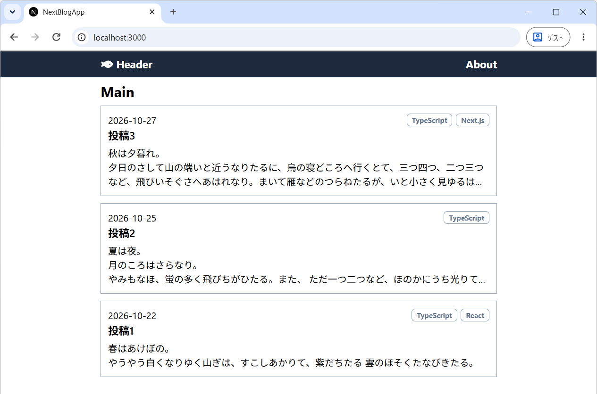
7.1 実装の方針
ブログの投稿記事は、(最終的には) ウェブAPIを叩いて「JSON形式」でバックエンドから取得するように実装します。具体的には、バックエンドがデータベースから読み出した投稿記事を、次のような JSON 形式のデータ として受け取ることを想定します。DBは、リレーショナルデータベースを想定します。
[
{
"id": "24f932b8-231b-429b-b9dc-569f07ba16a7",
"createdAt": "2026-10-24T22:37:17.367Z",
"title": "投稿2",
"content": "夏は夜。<br/>月のころは...(略)",
"coverImage": {
"url": "https://w1980.blob.core.windows.net/pg3/cover-img-green.jpg",
"height": 768,
"width": 1365
},
"categories": [
{
"id": "587ac4ab-92de-450c-9423-5e091d16ecb5",
"name": "TypeScript"
}
]
},
{
"id": "36b7c693-4cce-4d73-afa3-acb54a404290",
"createdAt": "2026-10-22T11:22:34.684Z",
"title": "投稿1",
"content": "春はあけぼの。<br/>やうやう白くなりゆく...(略)",
"coverImage": {
"url": "https://w1980.blob.core.windows.net/pg3/cover-img-purple.jpg",
"height": 768,
"width": 1365
},
"categories": [
{
"id": "587ac4ab-92de-450c-9423-5e091d16ecb5",
"name": "TypeScript"
},
{
"id": "5cf22131-bac8-4bd0-be8e-757cec2bcc9a",
"name": "React"
}
]
}
]ただし、ウェブAPIからの取得の前に、まずはローカルに配置した src/app/_mocks/dummyPosts.ts から、同じ構造の投稿データを読み込むところからはじめていきます。
ここで、以下の2点に注意してください。
"createdAt"は記事が作成された日時を「ISO8601形式」で表したものですが、末尾にZが付いている点です。この末尾の Z は、その日時が UTC（協定世界時）であること を示しています。そのため、「投稿1」の"2026-10-22T11:22:34.684Z"は、日本時間 (JST、UTC+9) でいえば2026年10月22日 20時22分34.684秒 を意味します。"content":には HTMLタグを含んだ文字列 が格納されています。ブログ記事中の「改行」を画面に反映させるためには HTML として描画する必要がありますが、許可するタグを制限し適切なサニタイズ処理を実装しないと XSS（クロスサイトスクリプティング）攻撃のリスク が生じます。
7.1.1 定着確認
- ISO8601 形式の
"2026-11-10T18:45:15.000Z"というデータがある。これは、日本時間 (JST) でいえば、何月何日、何時何分何秒を意味するか答えよ。- 答え : 2026年11月11日 03時45分15秒
"2026-10-22T11:22:34.684Z"の末尾のZが示すものとして、適切なものを1つ選べ。- ① 日時が日本標準時 (JST) で記録されていること。
- ② 日時にタイムゾーンが指定されていないこと。
- ③ 日時が協定世界時 (UTC) で記録されていること。
- ④ その日時が記録されたコンピュータの現地時刻であること。
- 答え : ③。日本時間で読むには、UTC の日時に9時間を加える。
- サンプルの「投稿2」の作成日時
"2026-10-24T22:37:17.367Z"を日本時間で表したものとして、適切なものを1つ選べ。- ① 2026年10月24日 22時37分17.367秒
- ② 2026年10月25日 07時37分17.367秒
- ③ 2026年10月25日 13時37分17.367秒
- ④ 2026年10月24日 13時37分17.367秒
- 答え : ②。9時間を加えると、日付も翌日に変わる。
- 上記の JSON を JavaScript で解析し、配列
postsに格納したとする。「投稿1」のカテゴリ名"React"を取得する式として、適切なものを1つ選べ。- ①
posts[0].categories[0].name - ②
posts[1].categories[0].name - ③
posts[1].categories[1].name - ④
posts[0].categories[1].name - 答え : ③。配列の添字は0から始まる。「投稿1」は配列の2番目、その React カテゴリも categories 配列の2番目にある。
- ①
- 「JavaScript の JSON.parse に上記の JSON 文字列を渡してそのまま解析すると、createdAt
は文字列ではなく、Date オブジェクトに自動変換される。」という説明は適切か、不適切か。
- 答え : 不適切。createdAt は解析後も文字列。日時として扱うには、日付を扱う機能やライブラリで別途処理する。
- 「取得した content を HTML
として画面に反映させる場合、許可するタグを制限して適切にサニタイズすることは、XSS
攻撃への対策となる。」という説明は適切か、不適切か。
- 答え : 適切。文字列を HTML として扱う際には、悪意のあるスクリプトなどが実行されないようにする必要がある。
7.2 投稿記事のモックを生成
ソフトウェア開発において、実際のデータやシステムの振る舞いを模倣した仮のオブジェクトやデータ のことを モック (Mock) といいます。このブログアプリにおいても、最終的にはウェブAPIを使用してバックエンドから投稿記事のデータを取得しますが、ここではまずは「モック」を作成し、それを利用してデータを取得します。
モックを作成する前に、まずは投稿データの「型」を定義します。src/app フォルダのなかに _types フォルダを作成して、各型を定義した Category.ts、CoverImage.ts、Post.ts という3つのファイルを作成してください。
なお、型ファイルの名前は、慣例に従って パスカルケース
で命名してください。また、これらは (JSXを含まない) 純粋なTypeScriptファイルなので 拡張子は「.tsx」ではなく「.ts」 としてください
(React関数コンポーネントのように JSX構文を使うファイル だけを拡張子
.tsx としてください)。
import type { Category } from "./Category";
import type { CoverImage } from "./CoverImage";
export type Post = {
id: string;
title: string;
content: string;
createdAt: string;
categories: Category[];
coverImage: CoverImage;
};次に src/app フォルダのなかに _mocks
フォルダを作成し、そこに dummyPosts.ts
というファイルを作成してください。そして、投稿記事を格納した dummyPosts という
Post[] 型の配列 を作成し、デフォルトエクスポートしてください。
- dummyPosts.ts のコードは こちら を参照してください。
最終的に、次のようなフォルダ構成になっていることを確認してください。
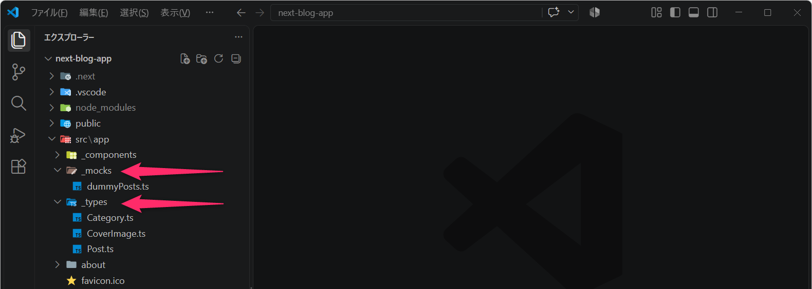
7.3 記事一覧の表示
アプリのトップページ (/)
にアクセスしたとき、次のように「投稿記事の一覧」が表示されるようにコンポーネントを追加・実装していきます。
まずは、src/app/_components のなかに、次のような PostSummary.tsx を作成してください。PostSummaryコンポーネントは 投稿記事の「概要」を表示するためのコンポーネント になります。
"use client";
import type { Post } from "@/app/_types/Post";
type Props = {
post: Post;
};
const PostSummary: React.FC<Props> = (props) => {
const { post } = props;
return (
<div className="space-y-2 border border-slate-400 p-3">
<div className="font-semibold">{post.title}</div>
<div>{post.content}</div>
</div>
);
};
export default PostSummary;この PostSummaryコンポーネント は Props (第04行目 から
第06行目) として、(単一の) 投稿記事 を受け取り、その
title と content を表示するコンポーネントとなっています。
次に、上記で作成した PostSummaryコンポーネント を呼び出すように
src/app/page.tsx (= / にアクセスしたとき
(トップページにアクセスしたとき) に読み込まれるファイル)
を以下のように編集してください。第04行目
で「PostSummaryコンポーネント」をインポートして、第41行目から第43行目
で mapメソッド
のなかで、呼び出しています。この処理の理解が怪しいときは Todoアプリの解説
に戻って復習してください。
"use client";
import { useState, useEffect } from "react";
import type { Post } from "@/app/_types/Post";
import PostSummary from "@/app/_components/PostSummary";
import dummyPosts from "@/app/_mocks/dummyPosts";
import { FontAwesomeIcon } from "@fortawesome/react-fontawesome";
import { faSpinner } from "@fortawesome/free-solid-svg-icons";
const Page: React.FC = () => {
// 投稿データを「状態」として管理 (初期値はnull)
const [posts, setPosts] = useState<Post[] | null>(null);
// コンポーネントのマウント時にモックデータの取得を開始
useEffect(() => {
// 本来はウェブAPIを叩いてデータを取得するが、まずはモックデータを使用
// (ネットからのデータ取得をシミュレートして１秒後にデータをセットする)
const timer = setTimeout(() => {
console.log("ウェブAPIからデータを取得しました (虚言)");
setPosts(dummyPosts);
}, 1000); // 1000ミリ秒 = 1秒
// データ取得の途中でページ遷移したときにタイマーを解除する処理
return () => clearTimeout(timer);
}, []);
// 投稿データが取得できるまでは「Loading...」を表示
if (!posts) {
return (
<div className="text-gray-500">
<FontAwesomeIcon icon={faSpinner} className="mr-1 animate-spin" />
Loading...
</div>
);
}
// 投稿データが取得できたら「投稿記事の一覧」を出力
return (
<main>
<div className="mb-2 text-2xl font-bold">Main</div>
<div className="space-y-3">
{posts.map((post) => (
<PostSummary key={post.id} post={post} />
))}
</div>
</main>
);
};
export default Page;また、ここでは 第14行目 からの useEffect
が重要な意味を持ちます。第24行目 の依存配列を空の []
にすることで、setPosts
による再レンダリングのたびに、データ取得の処理を繰り返さない仕組み
をつくっています。現時点では実際のウェブ API
には通信せず、1秒後にモックデータをセットしています。
なお、開発時の Strict Mode では、Effect の開始とクリーンアップが追加で実行されることがあります。このコードでは 第23行目 でタイマーを解除する関数を返し、不要になったタイマーが残らないようにしています。詳しくは React の公式ドキュメント も参照してください。
もし、データ取得の処理を useEffect の外に出し、Page
関数の本体で毎回実行するようにすると、次のように 無限ループ が発生することがあります。以下は、実際のウェブ API
から毎回新しいデータを取得する場合の流れです。
- ウェブAPIをコールしてデータを取得
- 取得したデータを
setPostsに与えて状態を更新 (state更新) - 状態が更新されたので再レンダリング (=Page関数が再実行される!)
- ウェブAPIをコールしてデータを取得
- 取得したデータを
setPostsに与えて状態を更新 (state更新) - 状態が更新されたので再レンダリング (=Page関数が再実行される!)
- 😱😱無限ループ😱😱
このような無限ループは、API使用制限（Rate Limit）への抵触、従量課金制のAPIを使用している場合は予期せぬ高額請求 (いわゆるAPI破産やクラウド破産)、サーバへの過剰な負荷 につながるため、十分に注意してください。
なお、前回講義
でも紹介しましたが、 useEffect については「初心者向け！ReactのuseEffectが何してるのか20分で説明」の動画、ウェブ検索、生成AIを活用して理解を深めてください。
- 「API破産」あるいは「クラウド破産」とは何ですか。
7.3.1 定着確認
- このセクションで示した src/app/_components/PostSummary.tsx の
PostSummaryコンポーネントがprops.postとして受け取るデータはどれか。適切な選択肢を1つ選択せよ。- ① 1件の投稿記事を表す
Post型のオブジェクト。 - ② 投稿記事全件を格納した
Post[]型の配列。 - ③ 1件のカテゴリを表す
Category型のオブジェクト。 - ④ 投稿記事の本文だけを格納した文字列。
- 答え: ①。親コンポーネントが posts.map で記事を1件ずつ取り出し、PostSummary に渡している。
- ① 1件の投稿記事を表す
- 上記のコードで、データ取得結果が 0 件だったとして
setPosts([])を実行した場合、表示はどうなるか。適切な選択肢を1つ選択せよ。- ① 空配列も
!postsが true になるため、Loading… のままとなる。 - ② Main の見出しは表示されるが、記事概要は1件も表示されない。
- ③ 空配列に map を使うと、実行時エラーになる。
- ④ 空配列による状態更新は無視され、更新前の表示が維持される。
- 答え: ②。null と空配列は異なる。空配列は !posts の条件に当てはまらず、map によって表示される記事も0件となる。
- ① 空配列も
- 「上記の useEffect は依存配列が空でも、setPosts によって Page
関数が再実行されるたびに、タイマーを新しく登録する。」という説明は適切か、不適切か。
- 答え: 不適切。状態更新で Page 関数は再実行されるが、依存配列が空の Effect は、その状態更新による再レンダリングだけでは再実行されない。
- このセクションで示した src/app/page.tsx の
useEffect内のreturn () => clearTimeout(timer)の主な目的として、適切な選択肢を1つ選択せよ。- ① タイマーを登録した直後に、待機せずその場で解除する。
- ② 1秒ごとにタイマーを登録し直し、投稿データの取得を繰り返す。
- ③ 待機中にページ遷移などでコンポーネントが取り除かれた場合に、不要になったタイマーを解除する。
- ④ 投稿データをセットした直後に、posts を初期値の null に戻す。
- 答え: ③。解除処理を行う関数を、Effect のクリーンアップ関数として返している。
- 「Next.js においては画面が正常に表示されていても、不要な API
呼び出しが繰り返されていないかを確認する必要がある。呼び出し回数の増加は、利用制限への抵触や、従量課金の場合の費用増加につながることがある。」という説明は適切か、不適切か。
- 答え: 適切。表示結果だけでなく、データ取得処理が実行されるタイミングや回数にも注意する。
7.4 動作確認
ここまでの実装を開発モードで実行すると、次のように <br/>
が文字として表示されます。これは、HTML タグが エスケープ処理
によって、タグとして解釈されずに表示されているためです。
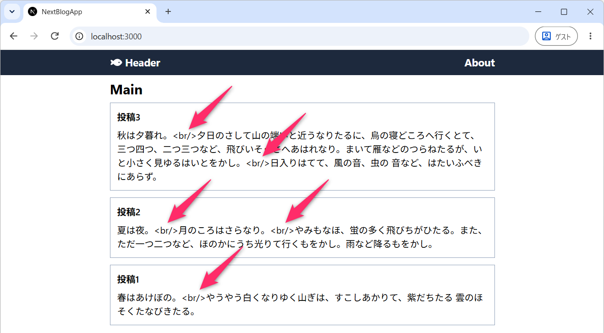
Next.js (React) では、JSXで <div>{post.content}</div>
のように文字列を渡すと、HTML タグとして解釈されないように
エスケープ処理されます。危険なタグを削除する「サニタイズ」とは区別しておいてください。
ただし、信頼できるコンテンツを HTML
として意図的に描画したい場合は、次のように dangerouslySetInnerHTML
属性を使用します。
実際に、src/app/_components/PostSummary.tsx
を書き換えて、post.content の <br/>
が「改行」に置き換わって表示されることを確認してください。
なお、改行や太字/斜体/下線などの 特定のタグだけを許可 し、それ以外のタグ
(例えば <script> などの危険なタグ) は削除したいときには
dompurify (Next.js でバックエンドでも使用する可能性があるのであれば
isomorphic-dompurify) などのライブラリを使用します。
ここでは、次のコマンドで isomorphic-dompurify
を追加してください。そのうえで、下のプロンプト例などを参考に、改行・太字・斜体・下線を許可してサニタイズし、その返り値を
dangerouslySetInnerHTML に渡すように書き換えてください。
npm i --save-exact isomorphic-dompurify@4.6.0このバージョンには Node.js 22.22.2 以降の 22 系列、24.15.0 以降の 24 系列、または 26 以降が必要です。連絡欄で案内したセキュリティアップデートを適用して進めてください。
XSS (Cross-Site Scripting) 脆弱性については、次年度の「知能情報実験実習2」の 前期テーマ で扱います。
- TypeScript を採用した Next.js 環境において、
isomorphic-dompurifyを利用し、HTMLコンテンツから「改行」と「太字・斜体・下線」以外のタグを削除したいです。どのようにすればよいですか。
7.4.1 定着確認
- ウェブアプリにおいて、HTMLコンテンツに含まれる可能性のある「悪意のあるスクリプト」や「HTMLタグ」を無害化し、XSS
攻撃を防ぐための処理のことを何というか答えよ。英語またはカタカナで答えること。
- 答え: 「サニタイズ (サニタイゼーション)」「sanitize (sanitization)」
- 「XSS攻撃」とは何の略か答えよ。英語またはカタカナで答えること。
- 答え: 「クロスサイト・スクリプティング攻撃」「Cross-Site Scripting攻撃」
post.contentが"前半<br/>後半"という文字列のとき、<div>{post.content}</div>の表示として、適切なものを1つ選べ。- ① 「前半」と「後半」の間で改行される。
- ②
前半<br/>後半と、タグも文字として表示される。 - ③ タグだけが削除され、
前半後半と表示される。 - ④ 文字列に HTML タグが含まれるため、React のエラーになる。
- 答え: ②。文字列として渡した内容はエスケープされ、HTML タグとして解釈されない。
- 「dangerouslySetInnerHTML を使えば、渡した HTML に含まれる危険なタグや属性は、React
が自動的に取り除いてくれる。」という説明は適切か、不適切か。
- 答え: 不適切。dangerouslySetInnerHTML 自体にサニタイズ機能はない。安全性を確認していない HTML をそのまま渡すと、XSS の危険がある。
- 「post.content が文字列の場合、DOMPurify.sanitize(post.content)
を一度呼び出せば、返り値を使わずに元の post.content を dangerouslySetInnerHTML
に渡しても、サニタイズ済みの内容が表示される。」という説明は適切か、不適切か。
- 答え: 不適切。サニタイズされた文字列は返り値として得られる。元の post.content は書き換わらないため、描画にはサニタイズの返り値を使う。
- DOMPurify の
ALLOWED_TAGSに["b", "br"]を指定し、<b>重要</b><br><img src="x" onerror="alert(1)">をサニタイズした結果として、適切なものを1つ選べ。ただし、それ以外の設定は変更していないものとする。- ①
重要 - ②
<b>重要</b><br><img src="x"> - ③
<b>重要</b><br> - ④
<b>重要</b><br><img src="x" onerror="alert(1)">- 答え: ③。許可した b と br は残り、許可していない img はタグごと削除される。
- ①
- 「isomorphic-dompurify は、サーバ側とブラウザ側で DOMPurify
を同じような書き方で利用できるようにするためのライブラリである。」という説明は適切か、不適切か。
- 答え: 適切。ブラウザと Node.js で異なる DOMPurify の初期化処理をライブラリ側が扱う。
7.4.2 演習 (宿題: 80分)
次のように「投稿日」と「カテゴリ」が表示されるように src/app/_components/PostSummary.tsx をアップデートしてください。「レイアウト」や「デザイン (装飾)」は各自で自由に設計してください。
- 必要に応じて dummyPosts.ts に検証用のデータを追加してください。
日時の表示整形には、次のコマンドで
dayjsをインストールして、それを利用してください。npm i --save-exact dayjs@1.11.23本文は 最大で「3行」まで表示 されるようにしてください (4行以上になる場合は
...で省略する)。- ヒント: Tailwind CSS の
line-clamp-3を利用すると便利です
- ヒント: Tailwind CSS の
- Tailwind CSS の
line-clamp-3とは、どのようなスタイリング機能を持ったユーティリティクラスですか。
- 中級者向けミッション (任意): src/app/page.tsx にボタンなどのUIを追加し、「日付の新しい順」「日付の古い順」に記事概要を並び替える処理を実装してみてください。
- 中級者向けミッション (任意): 同様に、カテゴリによるフィルタ機能
(絞り込み機能) を実装してみてください。
- 例えば「TypeScript」のカテゴリタグがついている記事だけを一覧で表示するなど。
- 実装例は こちら を参照してください。
7.5 最後の動作確認
開発サーバを停止し、次のコマンドを順に実行してください。
npm run lint
npm run build
npm run startリント と ビルド でエラーが出ないことを確認し、本番モードで
http://localhost:3000/ と http://localhost:3000/about
にアクセスしてください。記事一覧・投稿日・カテゴリ・改行、アバター画像、ヘッダのリンクを確認してください。
ブラウザのコンソール (デベロッパーツール) にもエラーが出ていないことを確認し、最後に
Ctrl+C でサーバを停止してください。